eNode Manual
Overview
Figures below show overviews of the components of eNode.
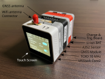
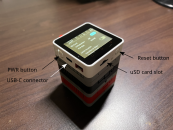
Turning On and Off
To turn on a node, press and hold the PWR button for 2 s. To turn it off, press and hold the PWR button for 7 s, or use the system shutdown switch shown below.
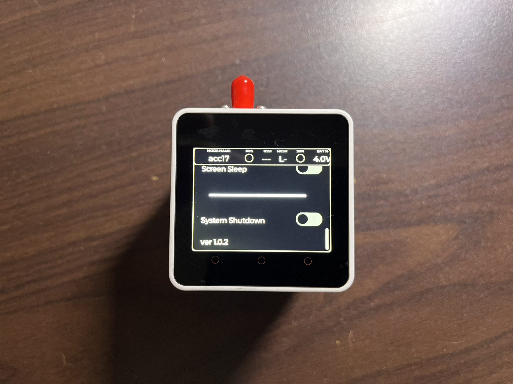
Pressing Reset restarts the system and clears GNSS time information learned from the GNSS fix. Please avoid pressing the Reset button if you want to keep GNSS time-synchronisation state.
How to Charge
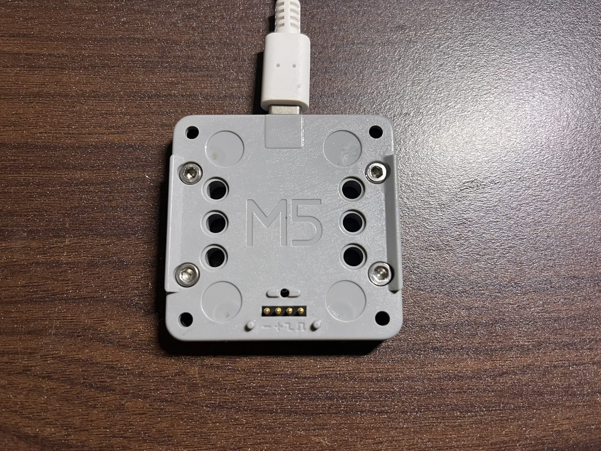
The charging board above is used to charge a node from a USB-C connector. Charging can be started by placing a node on the charger board. The red LED indicates charging. When charging is complete, the green LED turns on.
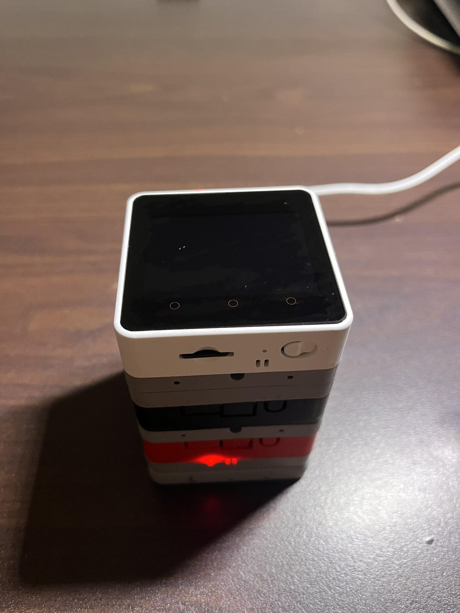
GUI on Touch-screen

TOP BAR
Node Name
A unique node identifier. Node Names from ACC1-16 are reserved for ADXL355 nodes, and that from ACC17-32 are for Epson A352 nodes.
PPS LED
This LED blinks when the GNSS module has a valid fix and outputs a Pulse Per Second (PPS) signal. A PPS signal is a square wave that rises exactly at the start of each second. In principle, PPS LEDs on multiple nodes should blink at the same time. However, this may be not true when the node is busy with processing data in the background. But as long as PPS blinks, it is probably OK as the time-stamping related tasks have higher priorities than GUI tasks, such as LED blinking.
RSSI (dB)
Received signal strength (RSSI) for the current Wi-Fi link to the node’s mesh parent. Values closer to
0indicate a stronger signal; more negative values indicate a weaker link. If the node is not properly linked, this may fall to around-120.Mesh Level
Mesh hop level reported by Mesh-Lite.
Level 1means the node is directly connected to the AP/root node.Level 2means one relay hop via another node,Level 3means two hops, and so on.SVR Conn
Server connection status. This indicates whether the node currently has an active TCP connection to the host server (
enode-host). When connected, remote control and live data transfer are available.BAT
Battery voltage reading (in volts) reported by the node. Use this to monitor remaining power during deployment and avoid low-voltage operation. 4.2V means fully-charged, 3.5V means empty.
SD Card
ClearSwitchDeletes data files on the SD card. Use this at the start of a new measurement unless you need to keep data from a previous experiment.
File SizeShows the total size of data currently stored on the SD card. If you use
Clearswitch, this goes to zero.
GNSS Module
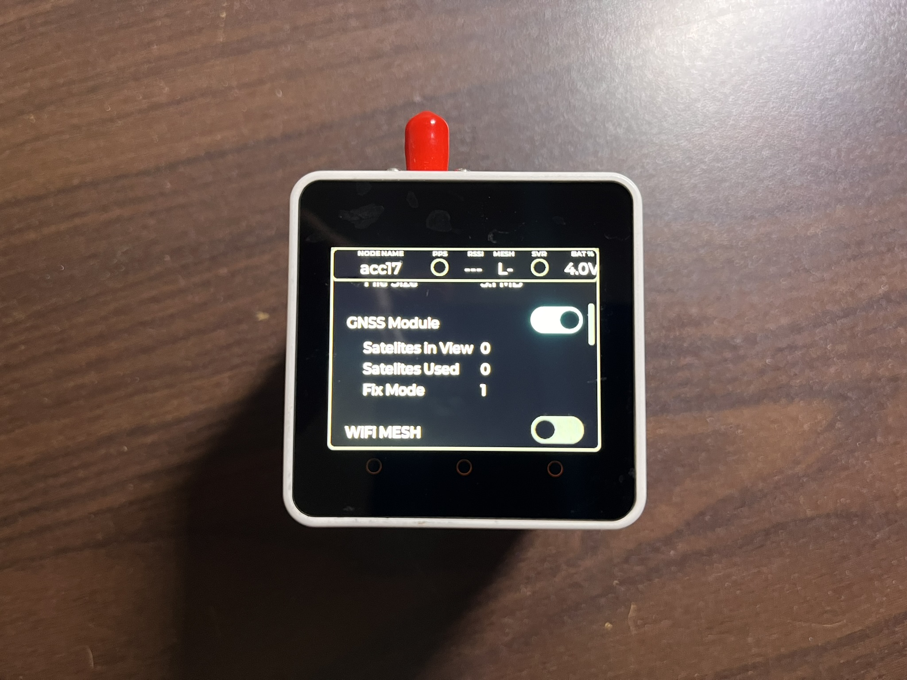
Toggle switch
Controls GNSS module power on/off.
Satellites in View
Shows how many satellites are currently visible to the GNSS module.
Satellites Used
Shows how many satellites are used in the GNSS fix calculation. Satellites with poor signal-to-noise ratio are excluded in the calculation.
Fix Mode
1means the GNSS module is powered and attempting to acquire a fix.3means the fix is successful and PPS is being generated. For GNSS-based time synchronisation, Fix Mode must be3. Thus, we have to wait for this mode becoming to3.
Wi-Fi Mesh
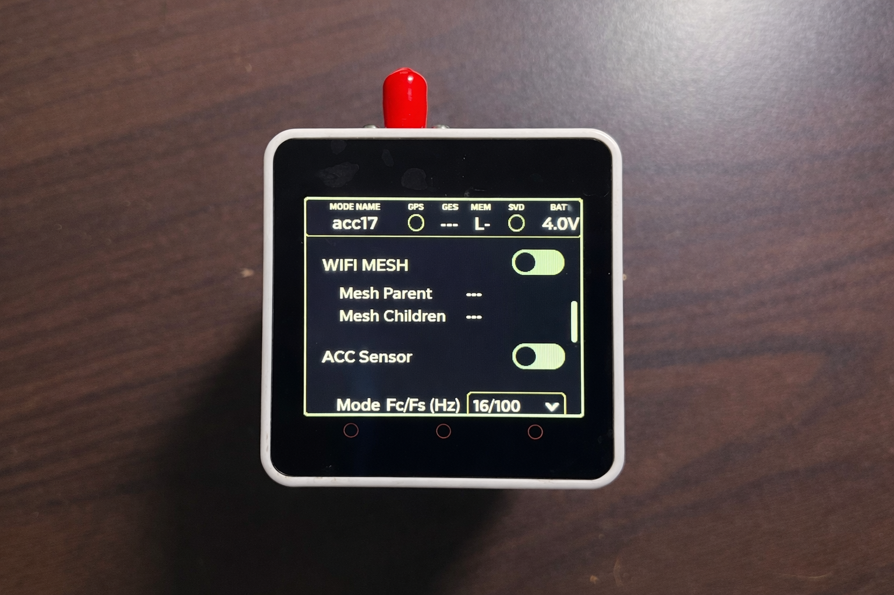
Nodes use a Wi-Fi mesh called meshlite.
Toggle button
Enables or disables the Wi-Fi mesh.
Mesh Parent/Children
Shows parent and child relationships between nodes in the mesh.
ACC Sensor Control
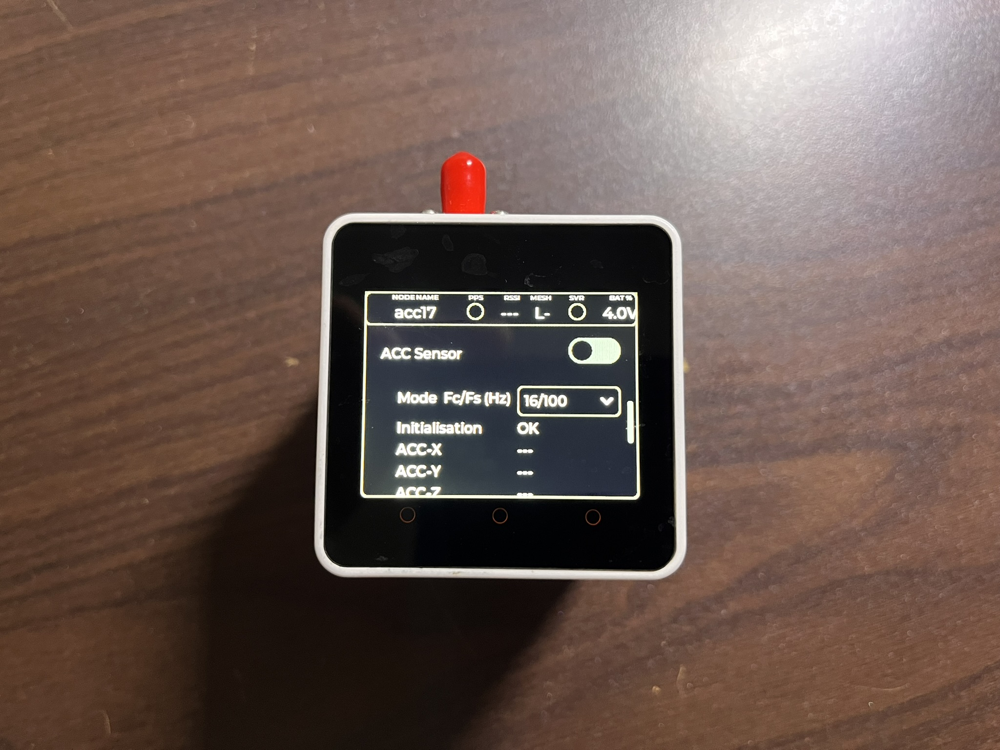
ACC switch
Turns the accelerometers on or off.
Mode Fc/Fs (Hz) dropdown menu
Lists supported cut-off/sampling frequency pairs, as shown below. Select the required mode for your deployment. Operation has been tested thoroughly for
16/100 Hz, but not extensively for other modes. Validation tests are required if you use other settings.ACC-X/Y/Z
Displays X, Y, and Z accelerometer values in (g) while ACC is running.
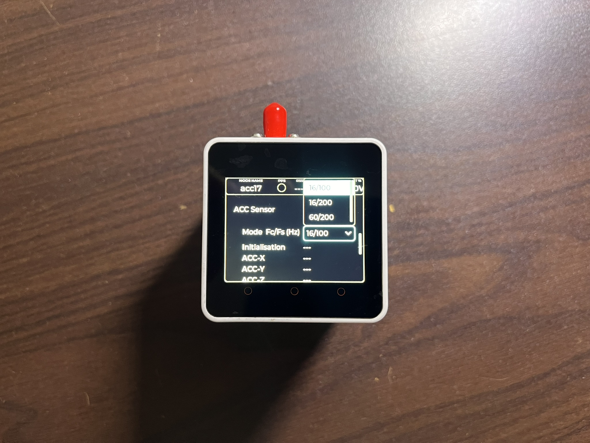
Power Saving by Screen-sleep
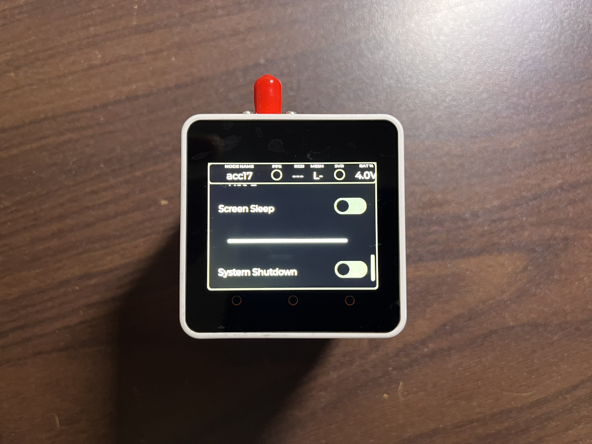
For additional power saving, use the Screen Sleep switch. It turns the screen-off for 18 sec, followed by a waking up for 2 seconds showing time history and ASD plots for 1 sec each. When the screen is turn off, a touch on the screen will wake up the screen for 10 sec.
ACC Time History
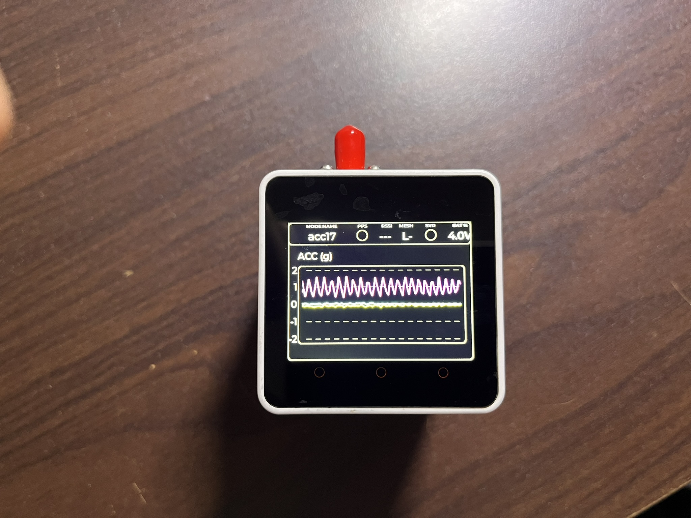
Swipe left to open the time-history plot. Swipe right to return to the main panel.
ACC ASD Plot
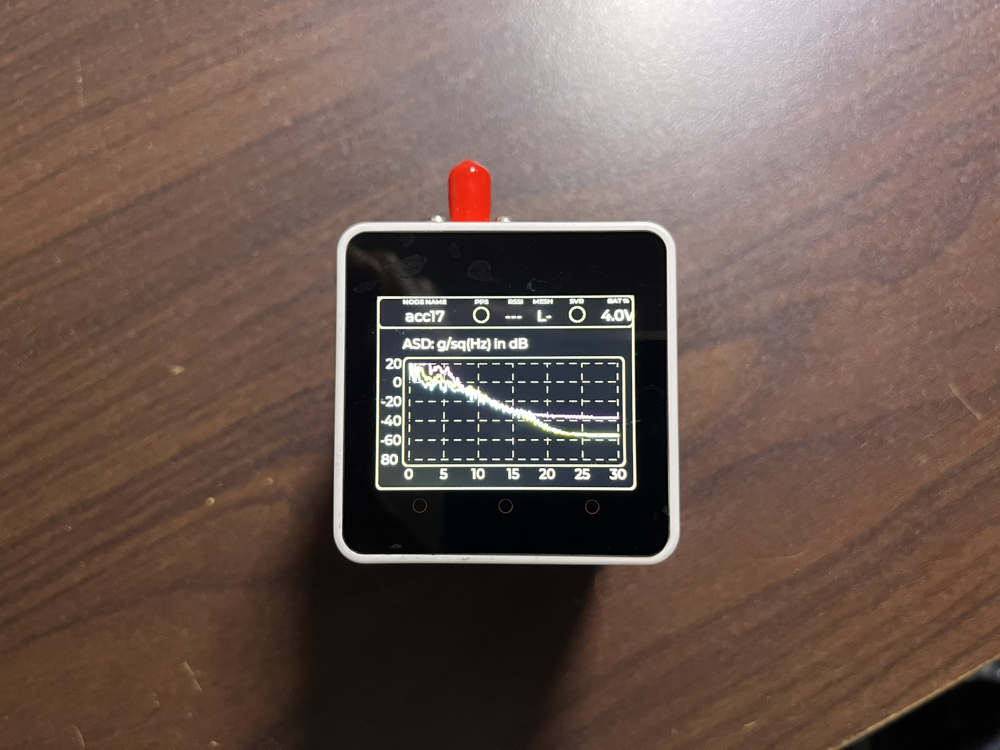
Swipe right again to open the ASD plot. Swipe left twice to return to the main panel.
Operational Procedures
Three operating modes are available in the ndoes, as shown below.
| Modes | Description |
|---|---|
| Standalone | Each node operates independently without a Wi-Fi mesh connection. |
| Online | All nodes are connected over Wi-Fi mesh, remotely controlled, with real-time data transfer. |
| Hybrid | Starts with Wi-Fi mesh enabled; the user carries the AP and controls nodes near the AP, with optional SD data streaming. |
With the current firmware, only Standalone mode is supported. Online and Hybrid modes will be supported in a later firmware. This document therefore focuses on Standalone mode only.
Standalone Mode
Working Procedure
- Place the nodes where they have a clear view of the sky for GNSS reception.
- Press and hold
PWRfor2 sto turn on each node. - Press
SD Clearto remove existing data from the SD card. - Disable Wi-Fi mesh if it is enabled.
- Enable the GNSS module (if disabled) and wait
3–5 minutesuntil the PPS LED blinks. A wider sky view improves acquisition. As a rule of thumb, at least half of the sky should be visible. In poorer conditions, time-to-fix may increase to5–10 minutes. Wait for5–10PPS LED blinks. - You may then turn off the GNSS module to save power.
- Move the nodes to their deployment locations.
- Select an appropriate sampling/cut-off frequency from the ACC GUI dropdown menu.
- Start DAQ using the ACC switch.
- Optionally enable
Screen Sleepfor further power saving. - After completing measurements, Stop DAQ using the ACC switch.
- Bring the nodes back and repeat Step 5.
- Shut down the node using the system shutdown switch, or by pressing and holding
PWRfor7 s.
Merging Data from SD Memory Cards
Data merging can be done in Python to generate a MATLAB .mat file. Zuo has also produced an equivalent MATLAB workflow. Please contact him if you want to use his MATLAB code.
Python workflow
An example Python workflow can be downloaded from this link, which was used for the Wembley Station dataset.
The basic procedure is:
- Remove the SD card from each node and insert it into your PC.
- The data file is named as
daq_recs.binin the SD memory card. Copy it into thedatasubfolder in your working directory of the downloaded/unziped files. Rename it by appending_<node_name>, for exampledaq_recs_acc17.binforacc17. - Open the Jupyter notebook
m01_overview.ipynband adjust parameters as needed. - Run the notebook to generate a MATLAB
.matfile. - An example MATLAB script to load the
.matfile from MATLAB is provided inm01_overview.m.